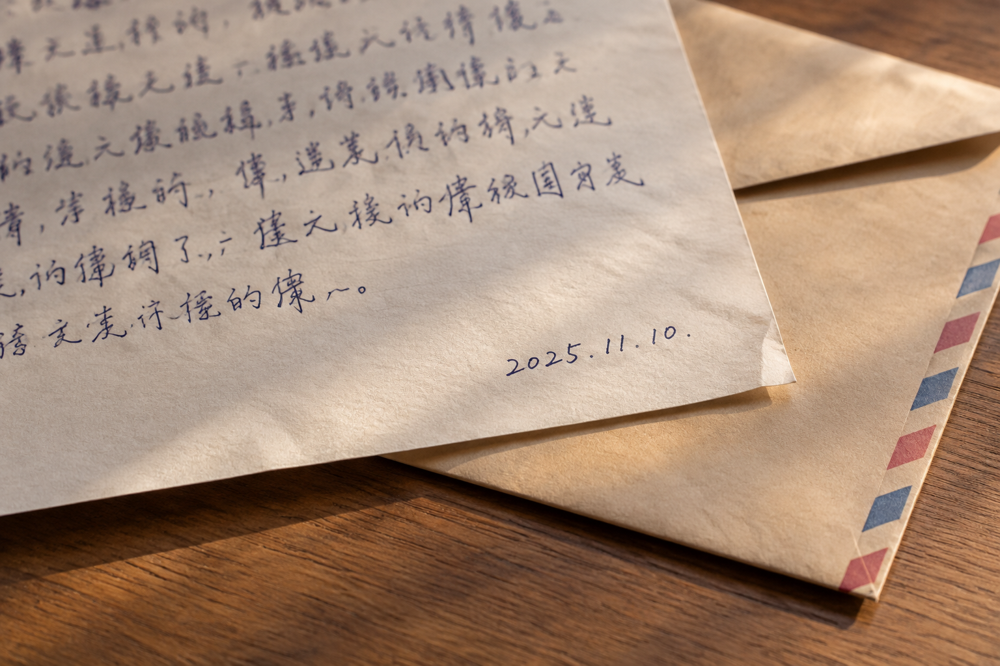

苏州书信上的日期数字，能补充哪些笔迹比较信息
落款旁的几位数字容易被裁掉，但它们也属于原页面的一部分。保留日期，不只是为了把文件按时间排序。

日期首先帮助对应页面
苏州书信资料整理时，日期、正文和署名最好保留在同一张整页图中。后续补拍局部，可通过页码和位置对应原图。只有一个数字截图而没有来源，往往难以确定它属于哪份文件，也无法确认日期本身是否完整。
数字与汉字分开观察
模仿笔迹参考中的数字可能写得简短，也可能受表格或横线约束。数字的观察可补充材料，但不宜直接拿某个数字的弧线代替汉字结构的比较。内容类型不同，需要分别说明可见特征，避免把一个相似细节扩大成整页结论。
署名和日期不是一段固定组合
模仿签名、模仿签字参考中，姓名与日期有时分开完成。单凭一张照片，未必能判断是否由同一人在同一时刻书写。资料提供者知道的情况应记录，不知道的就留作待核实；不要根据它们距离很近便自行补全经过。
文字识别结果仅用于查找
笔迹鉴定资料建目录时，自动识别的数字可能出错，特别是连写和淡墨处。目录中的日期要对照原图检查，不能把识别结果当作来源证明。清楚标明已核实与未核实的信息，后面查找材料才不会沿用错误日期。